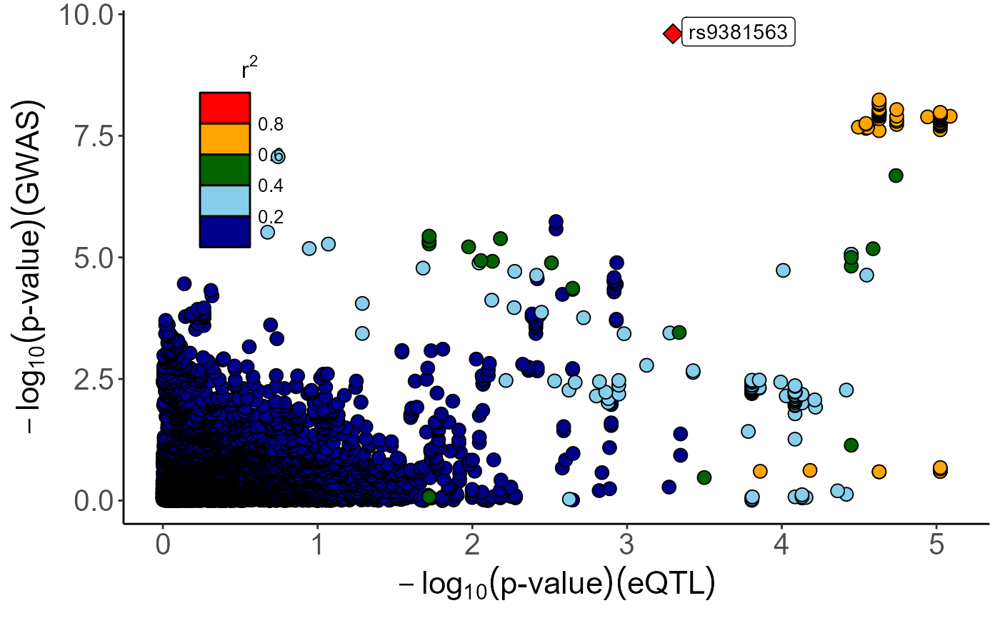

xQTLvisual_locusCompare
xQTLvisual_locusCompare.RdThis function is rebuilt from locuscompare.R (https://github.com/boxiangliu/locuscomparer/blob/master/R/locuscompare.R).
Usage
xQTLvisual_locusCompare(
eqtlDF,
gwasDF,
highlightSnp = "",
population = "EUR",
legend = TRUE,
legend_position = c("topright", "bottomright", "topleft"),
snpLD = NULL
)Arguments
- eqtlDF
A data.frame or data.table with two columns: dbSNP id and p-value.
- gwasDF
A data.frame or data.table with two columns: dbSNP id and p-value.
- highlightSnp
Default is the snp that is farthest from the origin of the coordinates.
- population
One of the 5 popuations from 1000 Genomes: 'AFR', 'AMR', 'EAS', 'EUR', and 'SAS'.#' @param token LDlink provided user token, default = NULL, register for token at https://ldlink.nci.nih.gov/?tab=apiaccess
- legend
(boolean, optional) Should the legend be shown? Default: TRUE.
- legend_position
(string, optional) Either 'bottomright','topright', or 'topleft'. Default: 'bottomright'.
- snpLD
A data.frame object of LD matrix. Default is null.
Examples
# \donttest{
library(data.table)
eqtlDF <-fread("https://gitee.com/stronghoney/exampleData/raw/master/eqtl/eqtlAsso1.txt")
gwasDF <-fread("https://gitee.com/stronghoney/exampleData/raw/master/gwas/AD/gwasChr6Sub3.txt")
xQTLvisual_locusCompare( eqtlDF, gwasDF, legend_position="topleft")
#> == Highlighted SNP: [rs9381563]...
#> Querying variant... | 2022-6月-01 16:40:37
#> == Done.
#> == Retrieve LD information of SNP: [rs9381563]...
#> == Done.

# }